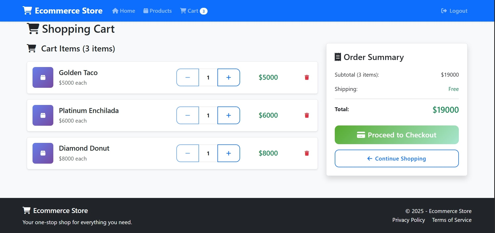
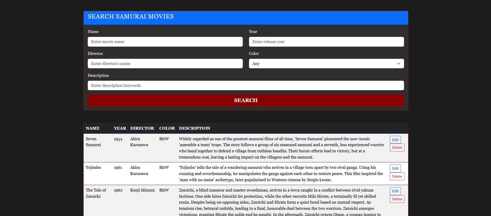
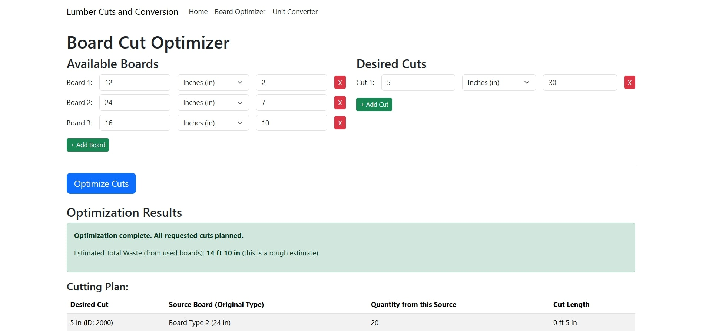
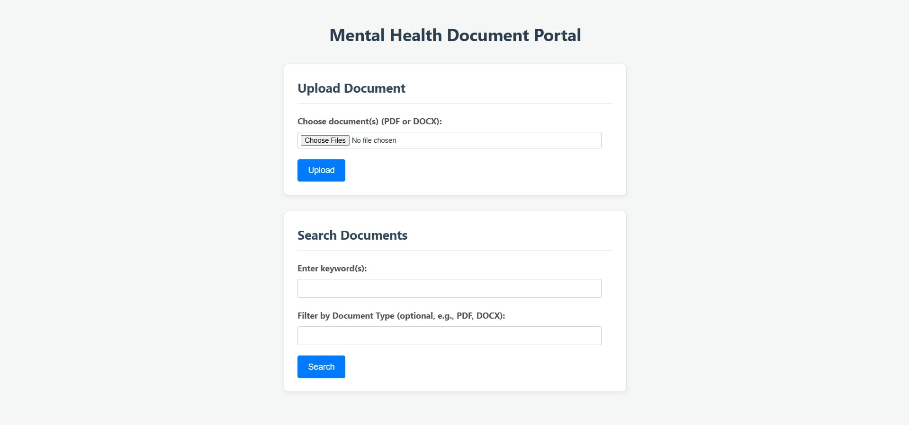
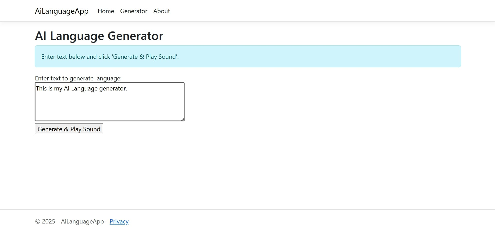
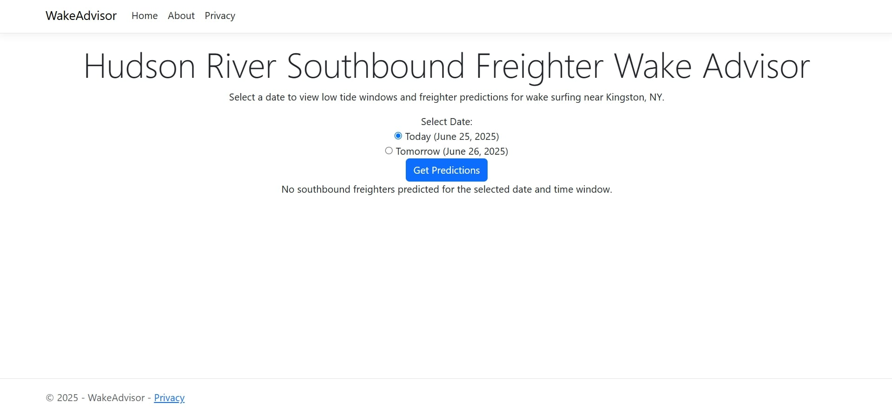
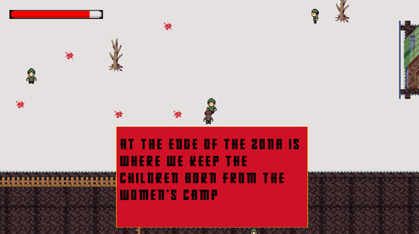

<!-- index.html: Landing page -->
<!DOCTYPE html>
<html lang="en">

<head>
    <meta charset="UTF-8">
    <meta name="viewport" content="width=device-width, initial-scale=1.0">
    <!-- Meta description for SEO -->
    <meta name="description" content="Developer Portfolio of Alex Hamadey" />
    <title>Alex Hamadey | Portfolio</title>
    <!-- Link to the shared CSS file -->
    <link rel="stylesheet" href="assets/css/style.css" />

</html>

<!-- Header with navigation (common to all pages) -->

<body class="landing-page">
    <div class="social-sidebar">
        <a href="https://github.com/ahamadey27" target="_blank"></a>
        <a href="https://www.linkedin.com/in/alex-hamadey/" target="_blank"></a>
    </div>
    <a href="mailto:hamadey@gmail.com" class="email-vertical">hamadey@gmail.com</a>
    <header>
        <nav style="display: flex; justify-content: space-between; align-items: center;">
            <a href="index.html" class="logo">Alex Hamadey</a>
            <ul>
                <ul>
                    <li><a href="about.html"><span class="nav-number">01.</span> About</a></li>
                    <li><a href="experience.html"><span class="nav-number">02.</span> Experience</a></li>
                    <li><a href="projects.html"><span class="nav-number">03.</span> Projects</a></li>
                    <li><a href="contact.html"><span class="nav-number">04.</span> Contact</a></li>
                    <li><a href="assets/AlexHamadey_Resume.pdf" class="resume-link" target="_blank">Resume</a></li>
                </ul>
        </nav>
    </header>

    <!-- Main content for Projects page -->
    <main>
        <section class="projects">
            <!-- Introduction text with name highlight -->
        <h1 class="section-title"><span class="section-number"></span> My Projects</h1>
        <div class="project-item">
            <div class="project-image-col">
                
            </div>
            <div class="project-content-col">
                <h2>Simple ECommerce App</h2>
                <p>
                    This project is a full-featured eCommerce web application that allows users to browse products, 
                    add items to a shopping cart, and complete purchases through a streamlined checkout process. 
                    The app features user authentication, product management, and order tracking, providing a realistic 
                    online shopping experience. It is designed with a clean, responsive interface for both desktop and mobile users.
                </p>
                <p>
                    Built using ASP.NET Core Web API and Entity Framework Core, the backend supports secure user registration, 
                    JWT-based authentication, and robust CRUD operations for products and orders. The project demonstrates 
                    best practices in RESTful API design, database modeling, and secure user management, making it a solid 
                    foundation for scalable eCommerce solutions.
                </p>
                <p class="project-links">
                    <a href="https://github.com/ahamadey27/EcommerceAPI" target="_blank">GitHub</a> |
                    <a href="https://ecommerceapi-production-d3df.up.railway.app/" target="_blank">Live Demo</a>
                </p>
            </div>
            
        </div>
        <div class="project-item">
            <div class="project-image-col">
                
            </div>

            <div class="project-content-col">
                <h2>Samurai Movie Database</h2>
                <p>
                    As a samurai movie aficionado, I have a hard time keeping track of all the different films out there. Many contain very similar themes and names (Vendetta of a Samurai VS Samurai Vendetta, for example). So to keep a tight grasp on my DVD collection, I curated database of classic samurai films built with ASP.NET Core Razor Pages. 
                    This full-stack web application provides an elegant platform to manage and display a 
                    comprehensive collection of samurai movies, featuring user authentication for administrators and a 
                    public-facing, searchable catalog for visitors. The project demonstrates core .NET development skills 
                    including database design, server-side filtering, and secure user management.
                </p>
                <p>
                    Built using ASP.NET Core, Entity Framework Core, and ASP.NET Core Identity for authentication, 
                    with a clean server-rendered frontend using Razor Pages. The application supports full CRUD operations 
                    for movie entries, server-side filtering by title, director, and year, and uses SQLite for persistent data 
                    storage. Ready for deployment to Azure App Service or other cloud platforms.
                </p>
                <p class="project-links">
                    <a href="https://github.com/ahamadey27/SamuraiMovieDB" target="_blank">GitHub</a> |
                    <a href="https://samurai-movie-db.azurewebsites.net/" target="_blank">Live Demo</a>
                </p>
            </div>
        </div>

        <div class="project-item">
            <div class="project-image-col">
                
            </div>
            <div class="project-content-col">
                <h2>Lumber Cuts and Conversion</h2>
                <p>
                    An efficient lumber cutting optimization and unit conversion tool built with ASP.NET Core Razor Pages. This specialized web application is designed for carpenters, woodworkers, and DIY enthusiasts to optimize lumber usage and minimize waste through intelligent cutting algorithms and comprehensive unit conversion utilities. The app features dynamic input management, waste calculation analysis, and real-time optimization results.
                </p>
                <p>
                    Built using ASP.NET Core Razor Pages with a custom Greedy Algorithm implementation for lumber cutting optimization. The application includes a responsive Bootstrap-based UI, service-oriented architecture with dependency injection, and comprehensive measurement conversion tools. Features board-cut optimization, multi-unit support, detailed waste analysis, and is deployed on Azure App Service for reliable performance.
                </p>
                <p class="project-links">
                    <a href="https://github.com/ahamadey27/lumber-webapp" target="_blank">GitHub</a> |
                    <a href="https://lumber-cut-conversion.azurewebsites.net/" target="_blank">Live Demo</a>
                </p>
            </div>
        </div>

        <div class="project-item">
            <div class="project-image-col">
                
            </div>
            <div class="project-content-col">
                <h2>Expense Tracker</h2>
                <p>
                    A personal finance management web application built with ASP.NET Core MVC that provides a clean, 
                    intuitive platform for tracking personal expenses with visual analytics through interactive charts. 
                    The project demonstrates modern web development practices using the MVC architectural pattern and features 
                    expense categorization, data visualization with dynamic pie charts, and comprehensive form validation 
                    for data integrity.
                </p>
                <p>
                    Built using ASP.NET Core MVC with Entity Framework Core and SQL Server for data persistence, 
                    featuring a service layer architecture with clean separation of concerns. The application includes 
                    Bootstrap-powered responsive UI, Chart.js integration for interactive data visualization, client-side 
                    and server-side validation, and automatic timestamping with category-based analytics for comprehensive 
                    expense tracking and analysis.
                </p>
                <p class="project-links">
                    <a href="https://github.com/ahamadey27/FinanceApp" target="_blank">GitHub</a> |
                    <a href="https://expensetrackerpiechart-apfcdrazc9gdhqfs.canadacentral-01.azurewebsites.net/" target="_blank">Live Demo</a>
                </p>
            </div>
        </div>

        <div class="project-item">
            <div class="project-image-col">
                
            </div>
            <div class="project-content-col">
                <h2>PDF Portal</h2>
                <p>
                    A modern document management system built with ASP.NET Core Minimal APIs designed for mental 
                    health providers to upload, process, and search through documents. This prototype web application 
                    features document text extraction, full-text search capabilities powered by Lucene.NET, and a clean 
                    responsive interface. The system supports PDF and DOCX file formats with automatic text extraction and 
                    real-time keyword-based search across all uploaded documents.
                </p>
                <p>
                    Built using ASP.NET Core Minimal APIs with PdfPig and DocX libraries for text extraction, Lucene.NET 
                    with in-memory indexing for full-text search, and background task processing for asynchronous document 
                    handling. The application features session-based document storage, RESTful API architecture, responsive 
                    HTML/CSS/JavaScript frontend, and is deployed on Azure App Service with Docker containerization support.
                </p>
                <p class="project-links">
                    <a href="https://github.com/ahamadey27/Mental-Health-Portal" target="_blank">GitHub</a> |
                    <a href="https://mental-health-portal-dcd4a0dabtczgabp.canadacentral-01.azurewebsites.net/"
                        target="_blank">Live Demo</a>
                </p>
            </div>        
        </div>

        <div class="project-item">
            <div class="project-image-col">
                
            </div>
            <div class="project-content-col">
                <h2>Text to AI Speech Model</h2>
                <p>
                    My friend, Jeff, once made a good point about how the droids communicate in Star Wars - 
                    how they communicate with each other in the same rhythm and tempo as humans when they could be 
                    communicating wirelessly or, at least, speak a hyper fast language that only they can comprehend. 
                    So, I set out to create that language! This innovative web application transforms text into a unique audio 
                    "language" using rule-based sound synthesis and the Web Audio API.
                </p>
                <p>
                    Built with ASP.NET Core Razor Pages and powered by the Web Audio API, this application converts textual 
                    characters into distinct audio frequencies, durations, and waveforms using a sophisticated character-to-sound 
                    encoding system. Features include multi-waveform support for different character categories, real-time audio 
                    playback, comprehensive character set mapping, and server-side validation. Deployed on Azure App Service with 
                    modern web development practices.
                </p>
                <p class="project-links">
                    <a href="https://github.com/ahamadey27/AiLanguageApp" target="_blank">GitHub</a> |
                    <a href="https://ai-language-app-fdb6d0g0fqckbhdw.canadacentral-01.azurewebsites.net/" target="_blank">Live Demo</a>
                </p>
            </div>
        </div>

        <div class="project-item">
            <div class="project-image-col">
                
            </div>
            <div class="project-content-col">
                <h2>Wake Advisor</h2>
                <p>I was stand-up paddleboarding on the Hudson River, and as a massive freighter passed by, its 
                    wake generated an amazing wave that peeled off the river's edge. Very satisfied after catching 
                    this wave, I came up with the idea to create a web app that integrates real-time tide predictions 
                    and live AIS vessel tracking. The app pinpoints windows when low tide (≤ 2 feet) coincides with 
                    the approach of a southbound freighter, maximizing wake surfing opportunities.</p>
                <p>
                    This prototype is built with ASP.NET Core Razor Pages and a modular C# backend that integrates real-time data from external APIs. 
                    The app fetches tide predictions from NOAA and attempts to track southbound freighters using AIS data, 
                    with all API endpoints and geolocation settings managed via configuration files. 
                    Please note: current AIS coverage for Hudson River freighters is limited, so live vessel tracking is 
                    not always available until a more comprehensive data source is integrated.
                </p>
                <p class="project-links">
                    <a href="https://github.com/ahamadey27/wake-app" target="_blank">GitHub</a> |
                    <a href="https://wakeadvisor-csbfgmfjeehqd4eh.canadacentral-01.azurewebsites.net/" target="_blank">Live
                        Demo</a>
                </p>
            </div>
        </div>

        <div class="project-item">
            <div class="project-image-col">
                
            </div>
            <div class="project-content-col">
                <h2>Death in the Gulag (Unity Game)</h2>
                <p>
                    My first project as a junior developer was creating a full game from scratch using C# scripts in 
                    the Unity Game Engine. It taught me the basics of object-oriented programming, methods, and how to create 
                    flow by creating and modifying scripts. In addition to the scripts, I made all the music, sound design, 
                    sprites, and animations to create a haunting feel of what it was like to be trapped in the Soviet Gulag. 
                    This atmospheric horror survival game challenges players to hear the true stories of what these people had to 
                    endure and witness.
                </p>
                <p>
                    Built entirely in Unity 2D with custom C# scripting, featuring hand-crafted pixel art animations,
                     original atmospheric soundtrack, and immersive sound design. Successfully published on Steam, 
                     demonstrating complete game development lifecycle from concept to commercial release, including play testing, 
                     bug fixing, and platform-specific optimization for Windows distribution.
                </p>
                <p class="project-links">
                    <a href="https://github.com/ahamadey27/Coding-Portfolio/tree/main/C%23/Death_In_The_Gulag" target="_blank">GitHub</a> |
                    <a href="https://store.steampowered.com/app/3436480/Death_in_the_Gulag/"
                        target="_blank">Live Demo</a>
                </p>
            </div>
        </div>

        </section>
    </main>

    <!--Footer Section-->
    <footer>
        <div class="footer-container">
            <div class="social">
                <!-- Social media icons (replace '#' with your actual profile URLs) -->
                <a href="https://github.com/ahamadey27" target="_blank"></a>
                <a href="https://www.linkedin.com/in/alex-hamadey/" target="_blank"></a>
            </div>
            <div class="contact-info">
                <!-- Email (mailto link) and location. The bullet (•) separates the items -->
                <a href="mailto:hamadey@gmail.com">hamadey@gmail.com</a> &bull;
                <span class="location">Kingston/NYC, NY</span>
            </div>
        </div>
    </footer>
</body>

</html>